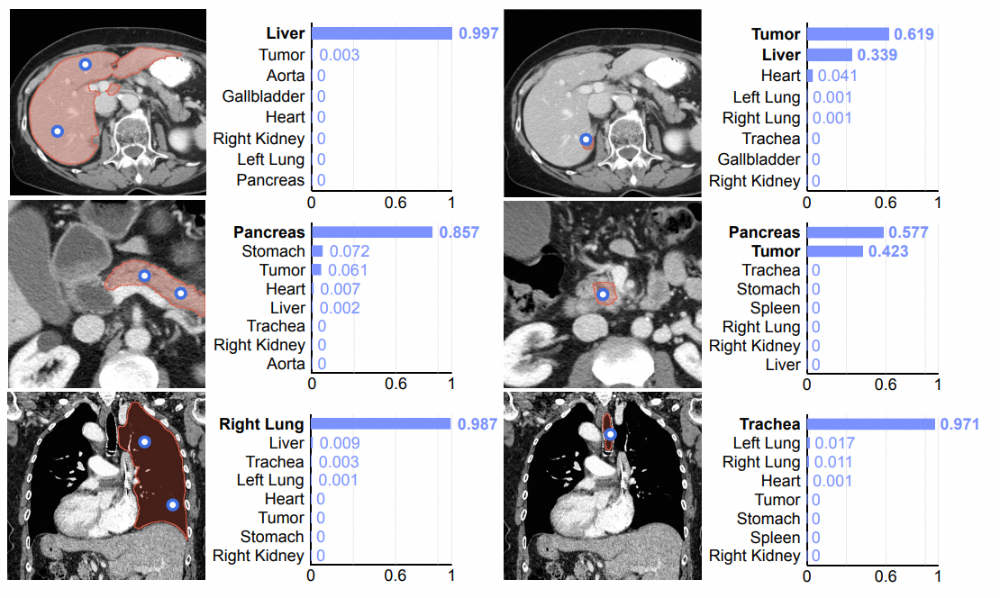
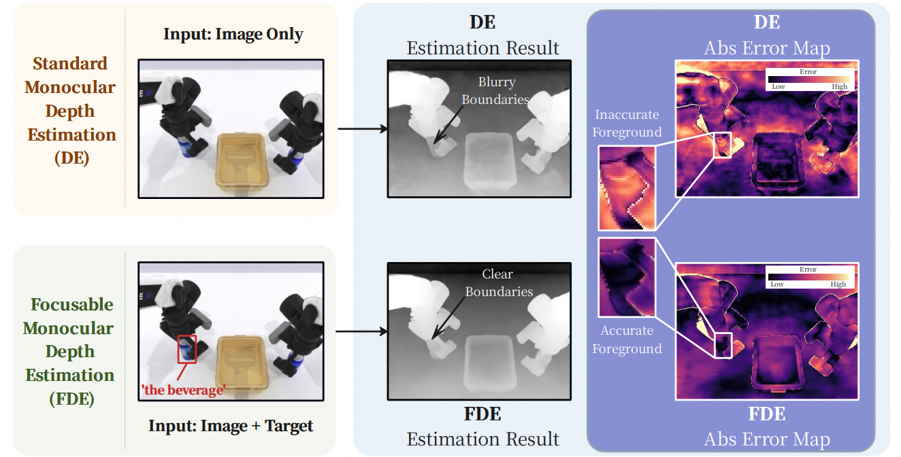
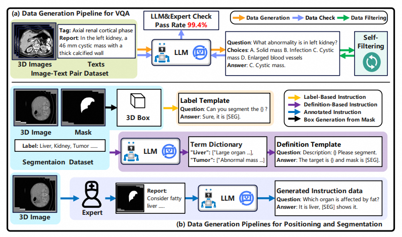
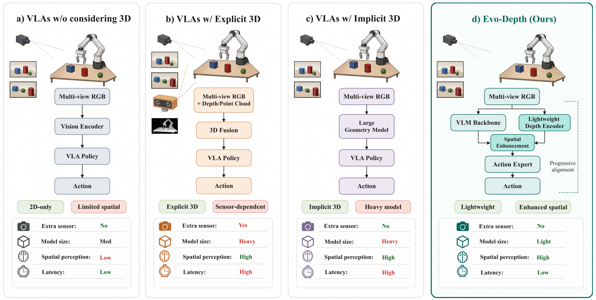
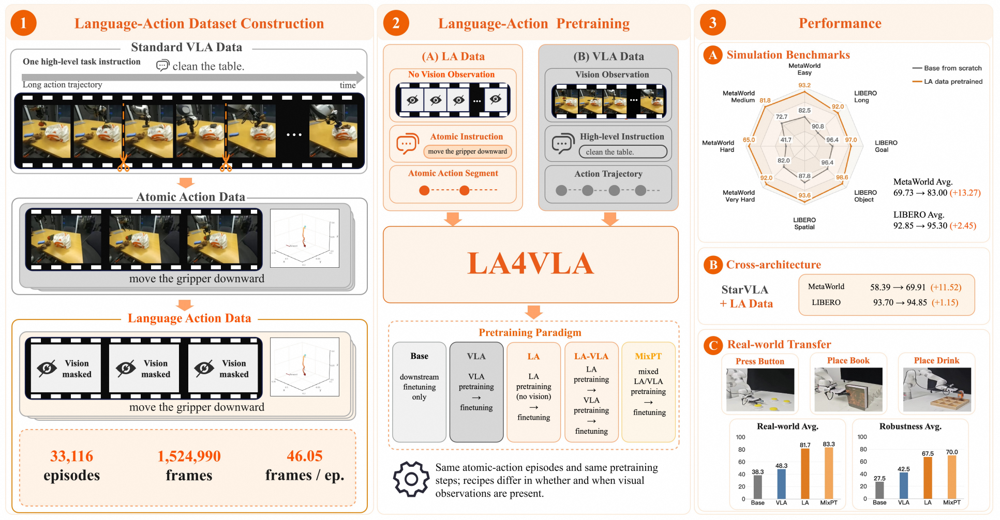
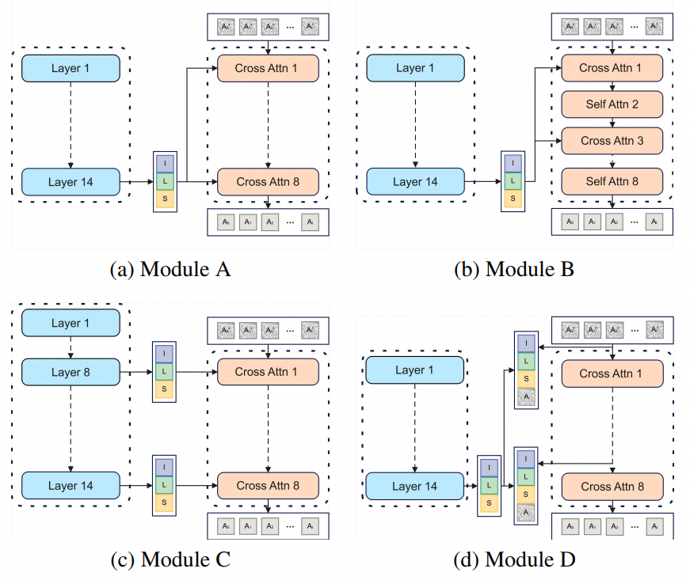
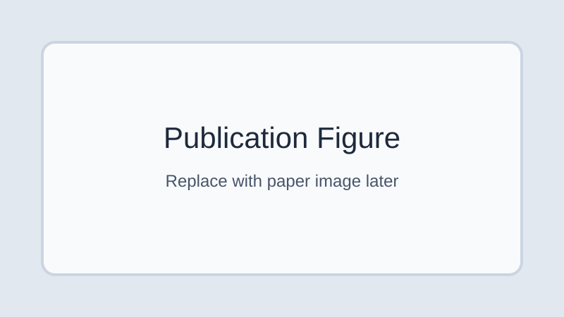
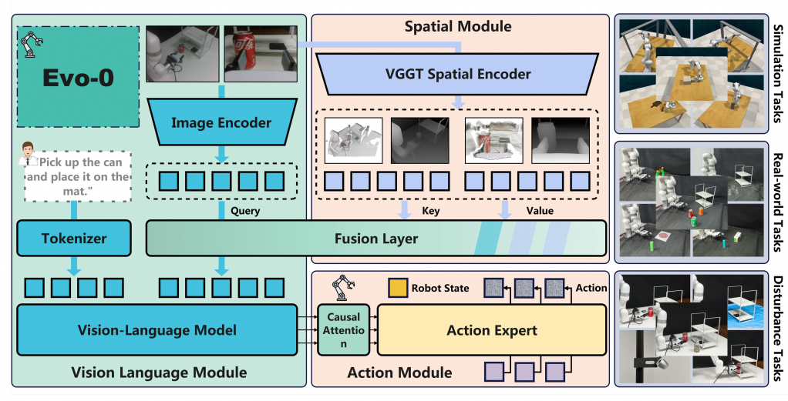
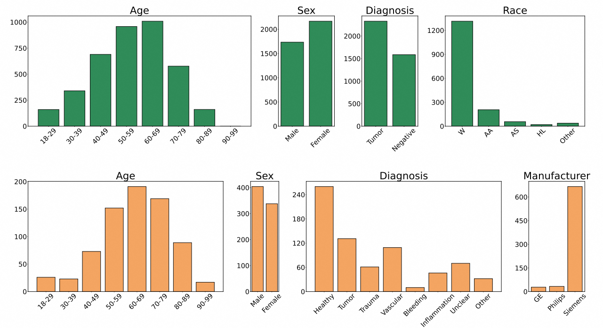

Segvol: Universal and interactive volumetric medical image segmentation
Y Du, F Bai, T Huang, B Zhao
Advances in Neural Information Processing Systems 37, 2025
Citations: 178
Embodied AI, Vision-Language-Action (VLA) models, and egocentric data.
I am a PhD student at the School of Artificial Intelligence, Shanghai Jiao Tong University.
My research focuses on Embodied AI, Vision-Language-Action (VLA) models, and egocentric data for embodied systems that perceive, understand, reason, and execute in physical environments.

I am currently a PhD student at the School of Artificial Intelligence (SAI), Shanghai Jiao Tong University. My research interests include Embodied AI, Vision-Language-Action (VLA) models, and egocentric data. Before joining SJTU, I received my MPhil degree from the Artificial Intelligence Thrust at The Hong Kong University of Science and Technology (Guangzhou). I received my bachelor's degree in Computer Science and Technology from Beihang University. My work explores how perception, understanding, reasoning, and execution can be integrated to support embodied systems that understand and interact with physical environments.
Current papers are ordered by Y Du's author position, then by citation count.
Citation counts updated on 2026/07/08.

Y Du, F Bai, T Huang, B Zhao
Advances in Neural Information Processing Systems 37, 2025
Citations: 178

Y Du, T Lin, Z Zhong, R Li, X Chen, J Liu, C Liu, YC Chen, Y Fu, B Zhao
arXiv preprint, 2026
Citations: 1

F Bai, Y Du, T Huang, MQH Meng, B Zhao
arXiv preprint, 2024
Citations: 243

T Lin, Y Du, J Liu, N Zhu, Y Li, Y Fu, Y Chen, H Cai, Z Ye, B Cheng, K Ye, ...
arXiv preprint, 2026
Citations: 3

T Lin, Y Du, Y Mao, Z Ye, Y Zhong, B Cheng, Y Wang, J Liu, Y Tian, J Yan, ...
arXiv preprint, 2026

T Lin, Y Zhong, Y Du, J Zhang, J Liu, Y Chen, E Gu, Z Liu, H Cai, Y Zou, ...
arXiv preprint, 2025
Citations: 21

Z Yang, Y Zhang, Y Du, C Tong
Image and Vision Computing 128, 2022
Citations: 7

T Lin, G Li, Y Zhong, Y Zou, Y Du, J Liu, E Gu, B Zhao
arXiv preprint, 2025
Citations: 52

PRAS Bassi, W Li, Y Tang, F Isensee, Z Wang, J Chen, YC Chou, ...
Advances in Neural Information Processing Systems 37, 2025
Citations: 57
Outstanding RBM Project 2026 (2nd rank out of 82 groups).

Email: yuxindu444@gmail.com
Google Scholar: Scholar profile
I welcome academic discussions and opportunities for research collaboration.